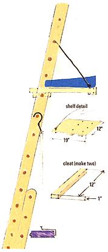

When painting roof eaves or high exterior walls while working from an extension ladder, finding a place to put the paint tray can present quite a problem. A piece of scrap lumber or plywood can be quickly made into a removable shelf that can support the paint supply. Measure the inside distance between the ladder risers and cut the lumber width to this dimension. Cut the length about 6" longer than the paint tray to allow room to rest your paintbrushes. To the bottom of the shelf piece, attach two cleats. The cleats hold the shelf in position on the rung. An eyebolt is placed in the outboard end of the shelf. To the eyebolt, attach a two-foot length of cord. The cord is wrapped around the closest rung that allows leveling of the shelf.
Also, when using a roller brush, a length of coat hanger or other heavy wire formed into a hook and run through the handle makes for a handy prop when trips up and down the ladder are necessary.
Arthur R. Lee
Santa Cruz, CA
|
 |
|
|